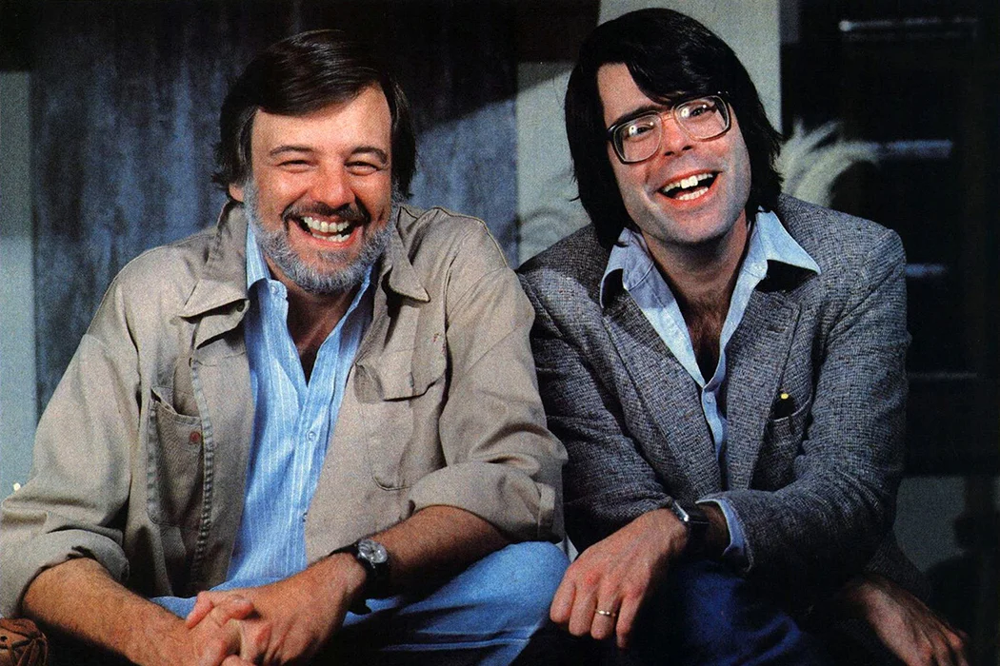
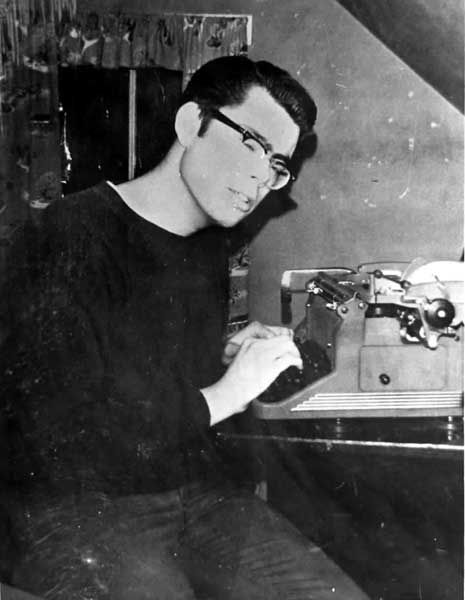
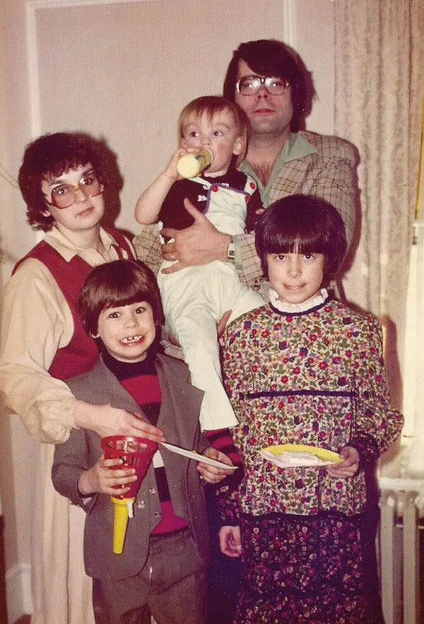
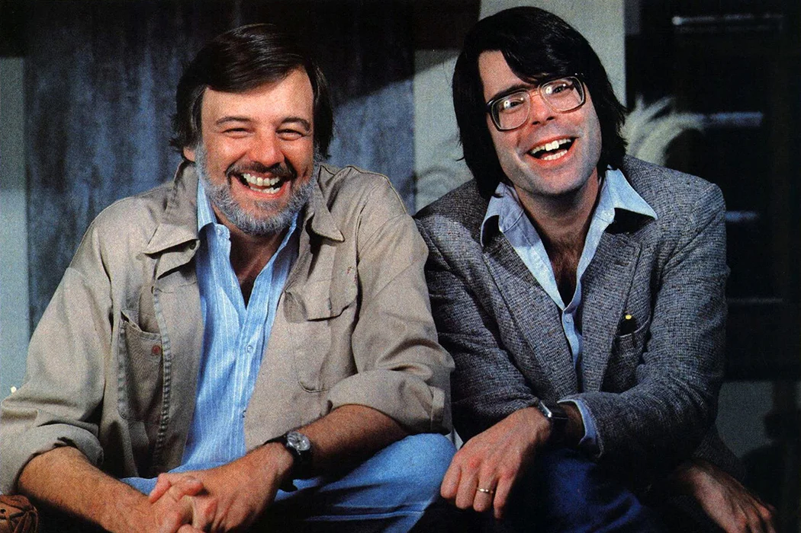
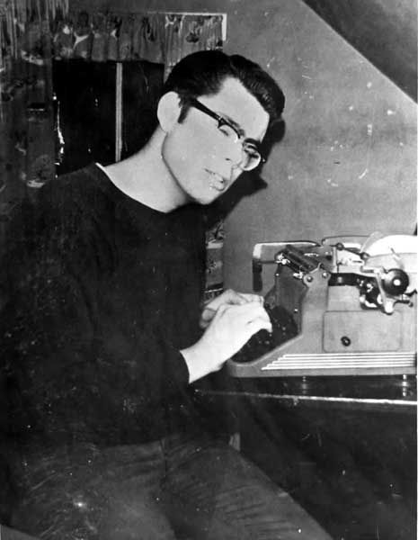
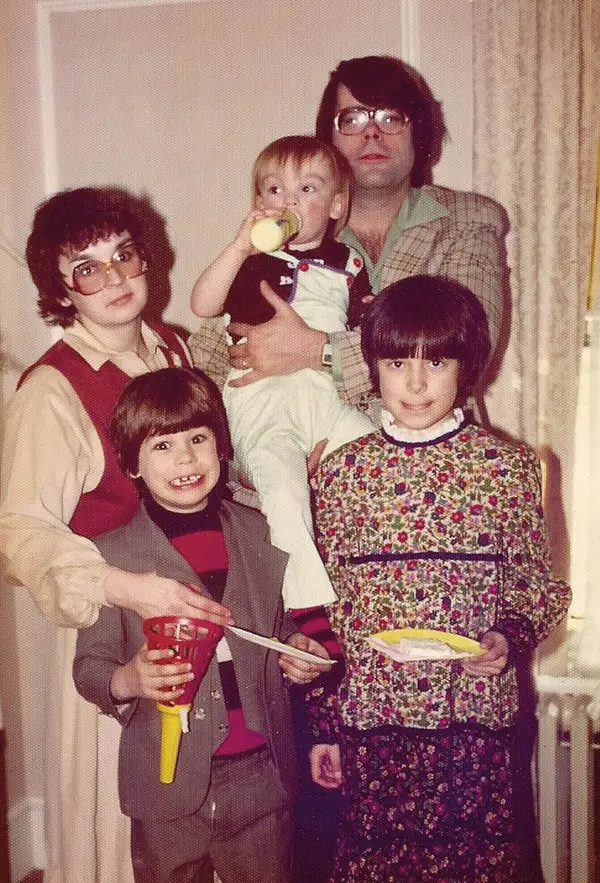

"People think that I must be a very strange person. This is not correct. I have the heart of a small boy. It is in a glass jar on my desk. "
Biography
Stephen Edwin King (born September 21, 1947) is an American author of horror, supernatural fiction, suspense, crime, science-fiction, and fantasy novels. Described as the "King of Horror", his books have sold more than 350 million copies as of 2006, and many have been adapted into films, television series, miniseries, and comic books.
King has published 54 novels, including seven under the pen name Richard Bachman, and six non-fiction books. He has written nearly 200 short stories, most of which have been collected in book collections. Many of his stories are set in his home state of Maine.
Books
The Shining
The Shining is a horror novel by American author Stephen King. Published in 1977, it is King's third published novel and first hardback bestseller, and the success of the book firmly established King as a preeminent author in the horror genre.
The setting and characters are influenced by King's personal experiences, including both his visit to The Stanley Hotel in 1974 and his recovery from alcoholism. The novel was followed by a sequel, Doctor Sleep, published in 2013.
The novel was adapted into a 1980 feature film of the same name directed by Stanley Kubrick and co-written with Diane Johnson.
It
The story of It follows the experiences of seven children as they are terrorized by an evil entity that exploits the fears of its victims to disguise itself while hunting its prey. "It" primarily appears in the form of Pennywise the Dancing Clown to attract its preferred prey of young children.
The novel is told through narratives alternating between two periods and is largely told in the third-person omniscient mode. It deals with themes that eventually became King staples: the power of memory, childhood trauma and its recurrent echoes in adulthood, the malevolence lurking beneath the idyllic façade of the American small town, and overcoming evil through mutual trust and sacrifice.
The novel won the British Fantasy Award in 1987, and received nominations for the Locus and World Fantasy Awards that same year. Publishers Weekly listed It as the best-selling hardcover fiction book in the United States in 1986.

Carrie
The novella published by Stephen King. Set in Chamberlain, Maine, the plot revolves around Carrie White, a friendless, bullied high-school girl from an abusive religious household who discovers she has telekinetic powers.
King started writing Carrie, intended to be a short story for the men's magazine Cavalier, after a friend's suggestion to write a story of a female character. Though King initially gave up on Carrie due to discomfort and apathy, and felt it would never be successful, his wife Tabitha convinced him to continue writing.
Carrie was published on April 5, 1974, with a print run of 30,000 copies, and a paperback edition was published by New American Library in April 1975. The paperback edition became a bestseller, particularly after the release of the 1976 film adaptation, reaching four million sales.
Adaptations
King has had a number of his literary work adapated for the big and small screen. A number of these have go onto become critically aclaimed.
The Shawshank Redemption
The film tells the story of banker Andy Dufresne (Tim Robbins), who is sentenced to life in Shawshank State Penitentiary for the murders of his wife and her lover, despite his claims of innocence. Over the following two decades, he befriends a fellow prisoner, contraband smuggler Ellis "Red" Redding (Morgan Freeman), and becomes instrumental in a money laundering operation led by the prison warden Samuel Norton (Bob Gunton). William Sadler, Clancy Brown, Gil Bellows, and James Whitmore appear in supporting roles.

11.22.63
11.22.63 is an American science fiction thriller miniseries consisting of eight episodes, in which a time traveler attempts to stop the assassination of John F. Kennedy. The series is executive-produced by J. J. Abrams, King, Bridget Carpenter, and Bryan Burk, and produced by James Franco, who also starred in the main role.
Photo Gallery
 




